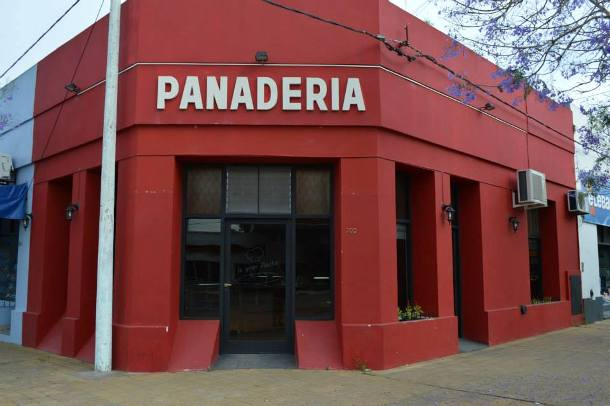

VILLA LURO

NUESTRA CASA
En Villa Luro, es dónde comenzó todo. Ubicados en Patrón 5686 comenzamos a realizar nuestros primeros pasos. En un principio sólo como una casa de medialunas, para luego ir agregando, de a poco más variedades. Al día de hoy contamos con todo tipo de facturas para poder desayunar o merendar como se debe. Además aquí también poseemos cocina para facilitarte el almuerzo y acercarte las más ricas tartas y los mejores sánguches de milanesa de la zona. Con más de 30 años en el lugar, nos convertimos ya en un clásico del barrio en el que no podés no pasar.